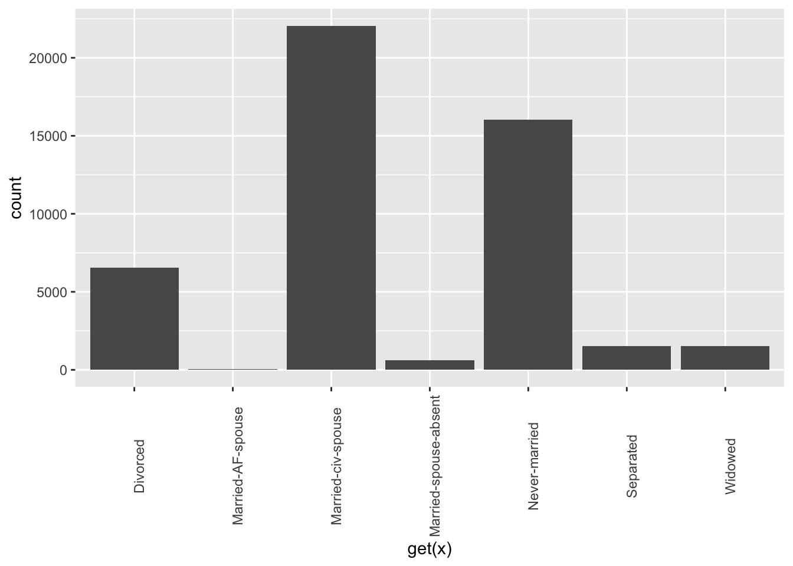
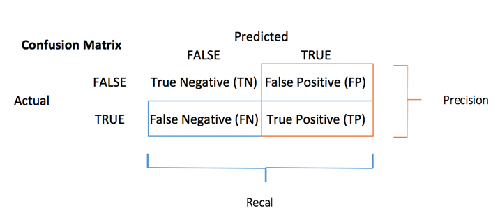

<!DOCTYPE html>

<html>

<head>

<meta charset="utf-8" />
<meta name="generator" content="pandoc" />
<meta http-equiv="X-UA-Compatible" content="IE=EDGE" />


<title>Lesson 24</title>

<script src="site_libs/jquery-1.11.3/jquery.min.js"></script>
<meta name="viewport" content="width=device-width, initial-scale=1" />
<link href="site_libs/bootstrap-3.3.5/css/flatly.min.css" rel="stylesheet" />
<script src="site_libs/bootstrap-3.3.5/js/bootstrap.min.js"></script>
<script src="site_libs/bootstrap-3.3.5/shim/html5shiv.min.js"></script>
<script src="site_libs/bootstrap-3.3.5/shim/respond.min.js"></script>
<script src="site_libs/jqueryui-1.11.4/jquery-ui.min.js"></script>
<link href="site_libs/tocify-1.9.1/jquery.tocify.css" rel="stylesheet" />
<script src="site_libs/tocify-1.9.1/jquery.tocify.js"></script>
<script src="site_libs/navigation-1.1/tabsets.js"></script>
<script src="site_libs/accessible-code-block-0.0.1/empty-anchor.js"></script>
<script src="site_libs/kePrint-0.0.1/kePrint.js"></script>
<link href="site_libs/lightable-0.0.1/lightable.css" rel="stylesheet" />
<link href="site_libs/font-awesome-5.1.0/css/all.css" rel="stylesheet" />
<link href="site_libs/font-awesome-5.1.0/css/v4-shims.css" rel="stylesheet" />
<!DOCTYPE html PUBLIC "-//W3C//DTD HTML 4.01//EN" "http://www.w3.org/TR/html4/strict.dtd">
<html>
<head>
  <meta http-equiv="Content-Type" content="text/html; charset=utf-8">
  <meta http-equiv="Content-Style-Type" content="text/css">
  <title></title>
  <meta name="Generator" content="Cocoa HTML Writer">
  <meta name="CocoaVersion" content="1504">
  <!-- this script changes the anchor position -->
  <!-- http://jsfiddle.net/ianclark001/rkocah23/ -->
<script>
(function(document, history, location) {
  var HISTORY_SUPPORT = !!(history && history.pushState);

  var anchorScrolls = {
    ANCHOR_REGEX: /^#[^ ]+$/,
    OFFSET_HEIGHT_PX: 65,

    /**
     * Establish events, and fix initial scroll position if a hash is provided.
     */
    init: function() {
      this.scrollToCurrent();
      $(window).on('hashchange', $.proxy(this, 'scrollToCurrent'));
      $('body').on('click', 'a', $.proxy(this, 'delegateAnchors'));
    },

    /**
     * Return the offset amount to deduct from the normal scroll position.
     * Modify as appropriate to allow for dynamic calculations
     */
    getFixedOffset: function() {
      return this.OFFSET_HEIGHT_PX;
    },

    /**
     * If the provided href is an anchor which resolves to an element on the
     * page, scroll to it.
     * @param  {String} href
     * @return {Boolean} - Was the href an anchor.
     */
    scrollIfAnchor: function(href, pushToHistory) {
      var match, anchorOffset;

      if(!this.ANCHOR_REGEX.test(href)) {
        return false;
      }

      match = document.getElementById(href.slice(1));

      if(match) {
        anchorOffset = $(match).offset().top - this.getFixedOffset();
        $('html, body').animate({ scrollTop: anchorOffset});

        // Add the state to history as-per normal anchor links
        if(HISTORY_SUPPORT && pushToHistory) {
          history.pushState({}, document.title, location.pathname + href);
        }
      }

      return !!match;
    },
    
    /**
     * Attempt to scroll to the current location's hash.
     */
    scrollToCurrent: function(e) {
      if(this.scrollIfAnchor(window.location.hash) && e) {
        e.preventDefault();
      }
    },

    /**
     * If the click event's target was an anchor, fix the scroll position.
     */
    delegateAnchors: function(e) {
      var elem = e.target;

      if(this.scrollIfAnchor(elem.getAttribute('href'), true)) {
        e.preventDefault();
      }
    }
  };

    $(document).ready($.proxy(anchorScrolls, 'init'));
})(window.document, window.history, window.location);
</script>

</head>
<body>
</body>
</html>

<style type="text/css">
  code{white-space: pre-wrap;}
  span.smallcaps{font-variant: small-caps;}
  span.underline{text-decoration: underline;}
  div.column{display: inline-block; vertical-align: top; width: 50%;}
  div.hanging-indent{margin-left: 1.5em; text-indent: -1.5em;}
  ul.task-list{list-style: none;}
    </style>


<style type="text/css">code{white-space: pre;}</style>
<style type="text/css" data-origin="pandoc">
code.sourceCode > span { display: inline-block; line-height: 1.25; }
code.sourceCode > span { color: inherit; text-decoration: inherit; }
code.sourceCode > span:empty { height: 1.2em; }
.sourceCode { overflow: visible; }
code.sourceCode { white-space: pre; position: relative; }
div.sourceCode { margin: 1em 0; }
pre.sourceCode { margin: 0; }
@media screen {
div.sourceCode { overflow: auto; }
}
@media print {
code.sourceCode { white-space: pre-wrap; }
code.sourceCode > span { text-indent: -5em; padding-left: 5em; }
}
pre.numberSource code
  { counter-reset: source-line 0; }
pre.numberSource code > span
  { position: relative; left: -4em; counter-increment: source-line; }
pre.numberSource code > span > a:first-child::before
  { content: counter(source-line);
    position: relative; left: -1em; text-align: right; vertical-align: baseline;
    border: none; display: inline-block;
    -webkit-touch-callout: none; -webkit-user-select: none;
    -khtml-user-select: none; -moz-user-select: none;
    -ms-user-select: none; user-select: none;
    padding: 0 4px; width: 4em;
    color: #aaaaaa;
  }
pre.numberSource { margin-left: 3em; border-left: 1px solid #aaaaaa;  padding-left: 4px; }
div.sourceCode
  {   }
@media screen {
code.sourceCode > span > a:first-child::before { text-decoration: underline; }
}
code span.al { color: #ff0000; font-weight: bold; } /* Alert */
code span.an { color: #60a0b0; font-weight: bold; font-style: italic; } /* Annotation */
code span.at { color: #7d9029; } /* Attribute */
code span.bn { color: #40a070; } /* BaseN */
code span.bu { } /* BuiltIn */
code span.cf { color: #007020; font-weight: bold; } /* ControlFlow */
code span.ch { color: #4070a0; } /* Char */
code span.cn { color: #880000; } /* Constant */
code span.co { color: #60a0b0; font-style: italic; } /* Comment */
code span.cv { color: #60a0b0; font-weight: bold; font-style: italic; } /* CommentVar */
code span.do { color: #ba2121; font-style: italic; } /* Documentation */
code span.dt { color: #902000; } /* DataType */
code span.dv { color: #40a070; } /* DecVal */
code span.er { color: #ff0000; font-weight: bold; } /* Error */
code span.ex { } /* Extension */
code span.fl { color: #40a070; } /* Float */
code span.fu { color: #06287e; } /* Function */
code span.im { } /* Import */
code span.in { color: #60a0b0; font-weight: bold; font-style: italic; } /* Information */
code span.kw { color: #007020; font-weight: bold; } /* Keyword */
code span.op { color: #666666; } /* Operator */
code span.ot { color: #007020; } /* Other */
code span.pp { color: #bc7a00; } /* Preprocessor */
code span.sc { color: #4070a0; } /* SpecialChar */
code span.ss { color: #bb6688; } /* SpecialString */
code span.st { color: #4070a0; } /* String */
code span.va { color: #19177c; } /* Variable */
code span.vs { color: #4070a0; } /* VerbatimString */
code span.wa { color: #60a0b0; font-weight: bold; font-style: italic; } /* Warning */

</style>
<script>
// apply pandoc div.sourceCode style to pre.sourceCode instead
(function() {
  var sheets = document.styleSheets;
  for (var i = 0; i < sheets.length; i++) {
    if (sheets[i].ownerNode.dataset["origin"] !== "pandoc") continue;
    try { var rules = sheets[i].cssRules; } catch (e) { continue; }
    for (var j = 0; j < rules.length; j++) {
      var rule = rules[j];
      // check if there is a div.sourceCode rule
      if (rule.type !== rule.STYLE_RULE || rule.selectorText !== "div.sourceCode") continue;
      var style = rule.style.cssText;
      // check if color or background-color is set
      if (rule.style.color === '' && rule.style.backgroundColor === '') continue;
      // replace div.sourceCode by a pre.sourceCode rule
      sheets[i].deleteRule(j);
      sheets[i].insertRule('pre.sourceCode{' + style + '}', j);
    }
  }
})();
</script>
<style type="text/css">
  pre:not([class]) {
    background-color: white;
  }
</style>


<style type="text/css">
h1 {
  font-size: 34px;
}
h1.title {
  font-size: 38px;
}
h2 {
  font-size: 30px;
}
h3 {
  font-size: 24px;
}
h4 {
  font-size: 18px;
}
h5 {
  font-size: 16px;
}
h6 {
  font-size: 12px;
}
.table th:not([align]) {
  text-align: left;
}
</style>


<link rel="stylesheet" href="style.css" type="text/css" />


<style type = "text/css">
.main-container {
  max-width: 940px;
  margin-left: auto;
  margin-right: auto;
}
code {
  color: inherit;
  background-color: rgba(0, 0, 0, 0.04);
}
img {
  max-width:100%;
}
.tabbed-pane {
  padding-top: 12px;
}
.html-widget {
  margin-bottom: 20px;
}
button.code-folding-btn:focus {
  outline: none;
}
summary {
  display: list-item;
}
</style>


<style type="text/css">
/* padding for bootstrap navbar */
body {
  padding-top: 60px;
  padding-bottom: 40px;
}
/* offset scroll position for anchor links (for fixed navbar)  */
.section h1 {
  padding-top: 65px;
  margin-top: -65px;
}
.section h2 {
  padding-top: 65px;
  margin-top: -65px;
}
.section h3 {
  padding-top: 65px;
  margin-top: -65px;
}
.section h4 {
  padding-top: 65px;
  margin-top: -65px;
}
.section h5 {
  padding-top: 65px;
  margin-top: -65px;
}
.section h6 {
  padding-top: 65px;
  margin-top: -65px;
}
.dropdown-submenu {
  position: relative;
}
.dropdown-submenu>.dropdown-menu {
  top: 0;
  left: 100%;
  margin-top: -6px;
  margin-left: -1px;
  border-radius: 0 6px 6px 6px;
}
.dropdown-submenu:hover>.dropdown-menu {
  display: block;
}
.dropdown-submenu>a:after {
  display: block;
  content: " ";
  float: right;
  width: 0;
  height: 0;
  border-color: transparent;
  border-style: solid;
  border-width: 5px 0 5px 5px;
  border-left-color: #cccccc;
  margin-top: 5px;
  margin-right: -10px;
}
.dropdown-submenu:hover>a:after {
  border-left-color: #ffffff;
}
.dropdown-submenu.pull-left {
  float: none;
}
.dropdown-submenu.pull-left>.dropdown-menu {
  left: -100%;
  margin-left: 10px;
  border-radius: 6px 0 6px 6px;
}
</style>

<script>
// manage active state of menu based on current page
$(document).ready(function () {
  // active menu anchor
  href = window.location.pathname
  href = href.substr(href.lastIndexOf('/') + 1)
  if (href === "")
    href = "index.html";
  var menuAnchor = $('a[href="' + href + '"]');

  // mark it active
  menuAnchor.parent().addClass('active');

  // if it's got a parent navbar menu mark it active as well
  menuAnchor.closest('li.dropdown').addClass('active');
});
</script>

<!-- tabsets -->

<style type="text/css">
.tabset-dropdown > .nav-tabs {
  display: inline-table;
  max-height: 500px;
  min-height: 44px;
  overflow-y: auto;
  background: white;
  border: 1px solid #ddd;
  border-radius: 4px;
}

.tabset-dropdown > .nav-tabs > li.active:before {
  content: "";
  font-family: 'Glyphicons Halflings';
  display: inline-block;
  padding: 10px;
  border-right: 1px solid #ddd;
}

.tabset-dropdown > .nav-tabs.nav-tabs-open > li.active:before {
  content: "&#xe258;";
  border: none;
}

.tabset-dropdown > .nav-tabs.nav-tabs-open:before {
  content: "";
  font-family: 'Glyphicons Halflings';
  display: inline-block;
  padding: 10px;
  border-right: 1px solid #ddd;
}

.tabset-dropdown > .nav-tabs > li.active {
  display: block;
}

.tabset-dropdown > .nav-tabs > li > a,
.tabset-dropdown > .nav-tabs > li > a:focus,
.tabset-dropdown > .nav-tabs > li > a:hover {
  border: none;
  display: inline-block;
  border-radius: 4px;
  background-color: transparent;
}

.tabset-dropdown > .nav-tabs.nav-tabs-open > li {
  display: block;
  float: none;
}

.tabset-dropdown > .nav-tabs > li {
  display: none;
}
</style>

<!-- code folding -->


<style type="text/css">

#TOC {
  margin: 25px 0px 20px 0px;
}
@media (max-width: 768px) {
#TOC {
  position: relative;
  width: 100%;
}
}

@media print {
.toc-content {
  /* see https://github.com/w3c/csswg-drafts/issues/4434 */
  float: right;
}
}

.toc-content {
  padding-left: 30px;
  padding-right: 40px;
}

div.main-container {
  max-width: 1200px;
}

div.tocify {
  width: 20%;
  max-width: 260px;
  max-height: 85%;
}

@media (min-width: 768px) and (max-width: 991px) {
  div.tocify {
    width: 25%;
  }
}

@media (max-width: 767px) {
  div.tocify {
    width: 100%;
    max-width: none;
  }
}

.tocify ul, .tocify li {
  line-height: 20px;
}

.tocify-subheader .tocify-item {
  font-size: 0.90em;
}

.tocify .list-group-item {
  border-radius: 0px;
}


</style>


</head>

<body>


<div class="container-fluid main-container">


<!-- setup 3col/9col grid for toc_float and main content  -->
<div class="row-fluid">
<div class="col-xs-12 col-sm-4 col-md-3">
<div id="TOC" class="tocify">
</div>
</div>

<div class="toc-content col-xs-12 col-sm-8 col-md-9">


<div class="navbar navbar-default  navbar-fixed-top" role="navigation">
  <div class="container">
    <div class="navbar-header">
      <button type="button" class="navbar-toggle collapsed" data-toggle="collapse" data-target="#navbar">
        <span class="icon-bar"></span>
        <span class="icon-bar"></span>
        <span class="icon-bar"></span>
      </button>
      <a class="navbar-brand" href="index.html">An R Tutorial for Beginners</a>
    </div>
    <div id="navbar" class="navbar-collapse collapse">
      <ul class="nav navbar-nav">
        <li>
  <a href="index.html">
    <span class="fas fa-home"></span>
     
    Home
  </a>
</li>
<li>
  <a href="about.html">
    <span class="fas fa-info-circle"></span>
     
    About
  </a>
</li>
<li class="dropdown">
  <a href="#" class="dropdown-toggle" data-toggle="dropdown" role="button" aria-expanded="false">
    <span class="fas fa-bars"></span>
     
    Lessons
     
    <span class="caret"></span>
  </a>
  <ul class="dropdown-menu" role="menu">
    <li class="dropdown-submenu">
      <a href="#" class="dropdown-toggle" data-toggle="dropdown" role="button" aria-expanded="false">Introduction</a>
      <ul class="dropdown-menu" role="menu">
        <li>
          <a href="R-course_lesson-1.html">Lesson 1</a>
        </li>
        <li>
          <a href="R-course_lesson-2.html">Lesson 2</a>
        </li>
        <li>
          <a href="R-course_lesson-3.html">Lesson 3</a>
        </li>
        <li>
          <a href="R-course_lesson-4.html">Lesson 4</a>
        </li>
      </ul>
    </li>
    <li class="dropdown-submenu">
      <a href="#" class="dropdown-toggle" data-toggle="dropdown" role="button" aria-expanded="false">Data Preparation</a>
      <ul class="dropdown-menu" role="menu">
        <li>
          <a href="R-course_lesson-5.html">Lesson 5</a>
        </li>
        <li>
          <a href="R-course_lesson-6.html">Lesson 6</a>
        </li>
        <li>
          <a href="R-course_lesson-7.html">Lesson 7</a>
        </li>
        <li>
          <a href="R-course_lesson-8.html">Lesson 8</a>
        </li>
        <li>
          <a href="R-course_lesson-9.html">Lesson 9</a>
        </li>
      </ul>
    </li>
    <li class="dropdown-submenu">
      <a href="#" class="dropdown-toggle" data-toggle="dropdown" role="button" aria-expanded="false">Programming</a>
      <ul class="dropdown-menu" role="menu">
        <li>
          <a href="R-course_lesson-10.html">Lesson 10</a>
        </li>
        <li>
          <a href="R-course_lesson-11.html">Lesson 11</a>
        </li>
        <li>
          <a href="R-course_lesson-12.html">Lesson 12</a>
        </li>
        <li>
          <a href="R-course_lesson-13.html">Lesson 13</a>
        </li>
        <li>
          <a href="R-course_lesson-14.html">Lesson 14</a>
        </li>
        <li>
          <a href="R-course_lesson-15.html">Lesson 15</a>
        </li>
        <li>
          <a href="R-course_lesson-16.html">Lesson 16</a>
        </li>
        <li>
          <a href="R-course_lesson-17.html">Lesson 17</a>
        </li>
      </ul>
    </li>
    <li class="dropdown-submenu">
      <a href="#" class="dropdown-toggle" data-toggle="dropdown" role="button" aria-expanded="false">Data Analysis</a>
      <ul class="dropdown-menu" role="menu">
        <li>
          <a href="R-course_lesson-18.html">Lesson 18</a>
        </li>
        <li>
          <a href="R-course_lesson-19.html">Lesson 19</a>
        </li>
        <li>
          <a href="R-course_lesson-20.html">Lesson 20</a>
        </li>
        <li>
          <a href="R-course_lesson-21.html">Lesson 21</a>
        </li>
        <li>
          <a href="R-course_lesson-22.html">Lesson 22</a>
        </li>
      </ul>
    </li>
    <li class="dropdown-submenu">
      <a href="#" class="dropdown-toggle" data-toggle="dropdown" role="button" aria-expanded="false">Data Analysis 2</a>
      <ul class="dropdown-menu" role="menu">
        <li>
          <a href="R-course_lesson-23.html">Lesson 23</a>
        </li>
        <li>
          <a href="R-course_lesson-24.html">Lesson 24</a>
        </li>
        <li>
          <a href="R-course_lesson-25.html">Lesson 25</a>
        </li>
      </ul>
    </li>
  </ul>
</li>
      </ul>
      <ul class="nav navbar-nav navbar-right">
        
      </ul>
    </div><!--/.nav-collapse -->
  </div><!--/.container -->
</div><!--/.navbar -->

<div class="fluid-row" id="header">


<h1 class="title toc-ignore">GLM in R: Generalized Linear Model (with Example)</h1>

</div>


<div id="what-is-logistic-regression" class="section level1">
<h1>What is Logistic regression?</h1>
<p>Logistic regression is used to predict a class, i.e., a probability. Logistic regression can predict a binary outcome accurately.</p>
<p>Imagine you want to predict whether a loan is denied/accepted based on many attributes. The logistic regression is of the form 0/1. <span class="math inline">\(y = 0\)</span> if a loan is rejected, <span class="math inline">\(y = 1\)</span> if accepted.</p>
<p>A logistic regression model differs from linear regression model in two ways.</p>
<ul>
<li>First of all, the logistic regression accepts only dichotomous (binary) input as a dependent variable (i.e., a vector of 0 and 1).</li>
<li>Secondly, the outcome is measured by the following probabilistic link function called sigmoid due to its S-shaped.:</li>
</ul>
<p><span class="math display">\[\sigma(t)=\frac{1}{1+\exp(-t)}\]</span> The output of the function is always between 0 and 1. Check Image below</p>
<p align="center">

</p>
<p>The sigmoid function returns values from 0 to 1. For the classification task, we need a discrete output of 0 or 1.</p>
<p>To convert a continuous flow into discrete value, we can set a decision bound at 0.5. All values above this threshold are classified as 1.</p>
</div>
<div id="how-to-create-generalized-liner-model-glm" class="section level1">
<h1>How to create Generalized Liner Model (GLM)</h1>
<p>Let’s use the adult data set to illustrate Logistic regression. The “adult” is a great dataset for the classification task. The objective is to predict whether the annual income in dollar of an individual will exceed 50.000. The dataset contains 46,033 observations and ten features:</p>
<ul>
<li>age: age of the individual. Numeric</li>
<li>education: Educational level of the individual. Factor.</li>
<li>marital.status: Marital status of the individual. Factor i.e. Never-married, Married-civ-spouse, …</li>
<li>gender: Gender of the individual. Factor, i.e. Male or Female</li>
<li>income: Target variable. Income above or below 50K. Factor i.e. &gt;50K, &lt;=50K</li>
</ul>
<p>amongst others</p>
<div class="sourceCode" id="cb1"><pre class="sourceCode r"><code class="sourceCode r"><span id="cb1-1"><a href="#cb1-1"></a><span class="kw">library</span>(dplyr)</span>
<span id="cb1-2"><a href="#cb1-2"></a>data_adult &lt;-<span class="st"> </span><span class="kw">read.csv</span>(<span class="st">&quot;https://raw.githubusercontent.com/guru99-edu/R-Programming/master/adult.csv&quot;</span>, </span>
<span id="cb1-3"><a href="#cb1-3"></a>                       <span class="dt">stringsAsFactors =</span> <span class="ot">TRUE</span>)</span>
<span id="cb1-4"><a href="#cb1-4"></a><span class="kw">glimpse</span>(data_adult)</span></code></pre></div>
<pre><code>## Rows: 48,842
## Columns: 10
## $ x               &lt;int&gt; 1, 2, 3, 4, 5, 6, 7, 8, 9, 10, 11, 12, 13, 14, 15, 16…
## $ age             &lt;int&gt; 25, 38, 28, 44, 18, 34, 29, 63, 24, 55, 65, 36, 26, 5…
## $ workclass       &lt;fct&gt; Private, Private, Local-gov, Private, ?, Private, ?, …
## $ education       &lt;fct&gt; 11th, HS-grad, Assoc-acdm, Some-college, Some-college…
## $ educational.num &lt;int&gt; 7, 9, 12, 10, 10, 6, 9, 15, 10, 4, 9, 13, 9, 9, 9, 14…
## $ marital.status  &lt;fct&gt; Never-married, Married-civ-spouse, Married-civ-spouse…
## $ race            &lt;fct&gt; Black, White, White, Black, White, White, Black, Whit…
## $ gender          &lt;fct&gt; Male, Male, Male, Male, Female, Male, Male, Male, Fem…
## $ hours.per.week  &lt;int&gt; 40, 50, 40, 40, 30, 30, 40, 32, 40, 10, 40, 40, 39, 3…
## $ income          &lt;fct&gt; &lt;=50K, &lt;=50K, &gt;50K, &gt;50K, &lt;=50K, &lt;=50K, &lt;=50K, &gt;50K, …</code></pre>
<p>We will proceed as follow:</p>
<ul>
<li>Step 1: Check continuous variables</li>
<li>Step 2: Check factor variables</li>
<li>Step 3: Feature engineering</li>
<li>Step 4: Summary statistic</li>
<li>Step 5: Train/test set</li>
<li>Step 6: Build the model</li>
<li>Step 7: Assess the performance of the model</li>
<li>Step 8: Improve the model</li>
</ul>
<p>Your task is to predict which individual will have a revenue higher than 50K.</p>
<div id="step-1-check-continuous-variables" class="section level2">
<h2>Step 1) Check continuous variables</h2>
<p>In the first step, you can see the distribution of the continuous variables.</p>
<div class="sourceCode" id="cb3"><pre class="sourceCode r"><code class="sourceCode r"><span id="cb3-1"><a href="#cb3-1"></a>continuous &lt;-<span class="st"> </span><span class="kw">select_if</span>(data_adult, is.numeric)</span>
<span id="cb3-2"><a href="#cb3-2"></a><span class="kw">summary</span>(continuous)</span></code></pre></div>
<pre><code>##        x              age        educational.num hours.per.week 
##  Min.   :    1   Min.   :17.00   Min.   : 1.00   Min.   : 1.00  
##  1st Qu.:12211   1st Qu.:28.00   1st Qu.: 9.00   1st Qu.:40.00  
##  Median :24422   Median :37.00   Median :10.00   Median :40.00  
##  Mean   :24422   Mean   :38.64   Mean   :10.08   Mean   :40.42  
##  3rd Qu.:36632   3rd Qu.:48.00   3rd Qu.:12.00   3rd Qu.:45.00  
##  Max.   :48842   Max.   :90.00   Max.   :16.00   Max.   :99.00</code></pre>
<p><strong>Code Explanation</strong></p>
<ul>
<li>continuous &lt;- select_if(data_adult, is.numeric): Use the function <em>select_if()</em> from the dplyr library to select only the numerical columns</li>
<li>summary(continuous): Print the summary statistic</li>
</ul>
<p>From the above table, you can see that the data have totally different scales and hours.per.weeks has large outliers (.i.e. look at the last quartile and maximum value).</p>
<p>You can deal with it following two steps:</p>
<ol style="list-style-type: decimal">
<li>Plot the distribution of hours.per.week</li>
<li>Standardize the continuous variables</li>
</ol>
<ol style="list-style-type: decimal">
<li>Plot the distribution: Let’s look closer at the distribution of hours.per.week</li>
</ol>
<div class="sourceCode" id="cb5"><pre class="sourceCode r"><code class="sourceCode r"><span id="cb5-1"><a href="#cb5-1"></a><span class="co"># Histogram with kernel density curve</span></span>
<span id="cb5-2"><a href="#cb5-2"></a><span class="kw">library</span>(ggplot2)</span>
<span id="cb5-3"><a href="#cb5-3"></a><span class="kw">ggplot</span>(continuous, <span class="kw">aes</span>(<span class="dt">x =</span> hours.per.week)) <span class="op">+</span></span>
<span id="cb5-4"><a href="#cb5-4"></a><span class="st">  </span><span class="kw">geom_density</span>(<span class="dt">alpha =</span> <span class="fl">.2</span>, <span class="dt">fill =</span> <span class="st">&quot;#FF6666&quot;</span>)</span></code></pre></div>
<p> The variable has lots of outliers and not well-defined distribution. You can partially tackle this problem by deleting the top 0.01 percent of the hours per week.</p>
<p>Basic syntax of quantile:</p>
<div class="sourceCode" id="cb6"><pre class="sourceCode r"><code class="sourceCode r"><span id="cb6-1"><a href="#cb6-1"></a><span class="kw">quantile</span>(variable, percentile)</span></code></pre></div>
<p><strong>arguments:</strong></p>
<ul>
<li>variable: Select the variable in the data frame to compute the percentile</li>
<li>percentile: Can be a single value between 0 and 1 or multiple value. If multiple, use this format: `c(A,B,C, …)</li>
<li>‘A’, ‘B’, ‘C and’…’ are all integer from 0 to 1.</li>
</ul>
<p>We compute the top 2 percent percentile</p>
<div class="sourceCode" id="cb7"><pre class="sourceCode r"><code class="sourceCode r"><span id="cb7-1"><a href="#cb7-1"></a>top_one_percent &lt;-<span class="st"> </span><span class="kw">quantile</span>(data_adult<span class="op">$</span>hours.per.week, <span class="fl">.99</span>)</span>
<span id="cb7-2"><a href="#cb7-2"></a>top_one_percent</span></code></pre></div>
<pre><code>## 99% 
##  80</code></pre>
<p><strong>Code Explanation</strong></p>
<ul>
<li>quantile(data_adult$hours.per.week, .99): Compute the value of the 99 percent of the working time</li>
</ul>
<p>98 percent of the population works under 80 hours per week.</p>
<p>You can drop the observations above this threshold. You use the filter from the dplyr library.</p>
<div class="sourceCode" id="cb9"><pre class="sourceCode r"><code class="sourceCode r"><span id="cb9-1"><a href="#cb9-1"></a>data_adult_drop &lt;-<span class="st"> </span>data_adult <span class="op">%&gt;%</span><span class="st"> </span><span class="kw">filter</span>(hours.per.week <span class="op">&lt;</span><span class="st"> </span>top_one_percent)</span>
<span id="cb9-2"><a href="#cb9-2"></a><span class="kw">dim</span>(data_adult_drop)</span></code></pre></div>
<pre><code>## [1] 48314    10</code></pre>
<ol start="2" style="list-style-type: decimal">
<li>Standardize the continuous variables</li>
</ol>
<p>You can standardize each column to improve the performance because your data do not have the same scale. You can use the function mutate_if from the dplyr library. The basic syntax is:</p>
<div class="sourceCode" id="cb11"><pre class="sourceCode r"><code class="sourceCode r"><span id="cb11-1"><a href="#cb11-1"></a><span class="kw">mutate_if</span>(df, condition, <span class="kw">funs</span>(<span class="cf">function</span>))</span></code></pre></div>
<p><strong>arguments:</strong></p>
<ul>
<li>‘df’: Data frame used to compute the function</li>
<li>‘condition’: Statement used. Do not use parenthesis</li>
<li>funs(function): Return the function to apply. Do not use parenthesis for the function</li>
</ul>
<p>You can standardize the numeric columns as follow:</p>
<div class="sourceCode" id="cb12"><pre class="sourceCode r"><code class="sourceCode r"><span id="cb12-1"><a href="#cb12-1"></a>data_adult_rescale &lt;-<span class="st"> </span>data_adult_drop <span class="op">%&gt;%</span></span>
<span id="cb12-2"><a href="#cb12-2"></a><span class="st">    </span><span class="kw">mutate_if</span>(is.numeric, <span class="kw">funs</span>(<span class="kw">as.numeric</span>(<span class="kw">scale</span>(.))))</span>
<span id="cb12-3"><a href="#cb12-3"></a><span class="kw">head</span>(data_adult_rescale)</span></code></pre></div>
<div class="kable-table">

<table>
<thead>
<tr>
<th style="text-align:right;">
x
</th>
<th style="text-align:right;">
age
</th>
<th style="text-align:left;">
workclass
</th>
<th style="text-align:left;">
education
</th>
<th style="text-align:right;">
educational.num
</th>
<th style="text-align:left;">
marital.status
</th>
<th style="text-align:left;">
race
</th>
<th style="text-align:left;">
gender
</th>
<th style="text-align:right;">
hours.per.week
</th>
<th style="text-align:left;">
income
</th>
</tr>
</thead>
<tbody>
<tr>
<td style="text-align:right;">
-1.732661
</td>
<td style="text-align:right;">
-0.9916131
</td>
<td style="text-align:left;">
Private
</td>
<td style="text-align:left;">
11th
</td>
<td style="text-align:right;">
-1.1983003
</td>
<td style="text-align:left;">
Never-married
</td>
<td style="text-align:left;">
Black
</td>
<td style="text-align:left;">
Male
</td>
<td style="text-align:right;">
0.0082160
</td>
<td style="text-align:left;">
&lt;=50K
</td>
</tr>
<tr>
<td style="text-align:right;">
-1.732590
</td>
<td style="text-align:right;">
-0.0446406
</td>
<td style="text-align:left;">
Private
</td>
<td style="text-align:left;">
HS-grad
</td>
<td style="text-align:right;">
-0.4191721
</td>
<td style="text-align:left;">
Married-civ-spouse
</td>
<td style="text-align:left;">
White
</td>
<td style="text-align:left;">
Male
</td>
<td style="text-align:right;">
0.8856429
</td>
<td style="text-align:left;">
&lt;=50K
</td>
</tr>
<tr>
<td style="text-align:right;">
-1.732519
</td>
<td style="text-align:right;">
-0.7730810
</td>
<td style="text-align:left;">
Local-gov
</td>
<td style="text-align:left;">
Assoc-acdm
</td>
<td style="text-align:right;">
0.7495203
</td>
<td style="text-align:left;">
Married-civ-spouse
</td>
<td style="text-align:left;">
White
</td>
<td style="text-align:left;">
Male
</td>
<td style="text-align:right;">
0.0082160
</td>
<td style="text-align:left;">
&gt;50K
</td>
</tr>
<tr>
<td style="text-align:right;">
-1.732448
</td>
<td style="text-align:right;">
0.3924236
</td>
<td style="text-align:left;">
Private
</td>
<td style="text-align:left;">
Some-college
</td>
<td style="text-align:right;">
-0.0296080
</td>
<td style="text-align:left;">
Married-civ-spouse
</td>
<td style="text-align:left;">
Black
</td>
<td style="text-align:left;">
Male
</td>
<td style="text-align:right;">
0.0082160
</td>
<td style="text-align:left;">
&gt;50K
</td>
</tr>
<tr>
<td style="text-align:right;">
-1.732377
</td>
<td style="text-align:right;">
-1.5015213
</td>
<td style="text-align:left;">
?
</td>
<td style="text-align:left;">
Some-college
</td>
<td style="text-align:right;">
-0.0296080
</td>
<td style="text-align:left;">
Never-married
</td>
<td style="text-align:left;">
White
</td>
<td style="text-align:left;">
Female
</td>
<td style="text-align:right;">
-0.8692109
</td>
<td style="text-align:left;">
&lt;=50K
</td>
</tr>
<tr>
<td style="text-align:right;">
-1.732306
</td>
<td style="text-align:right;">
-0.3360167
</td>
<td style="text-align:left;">
Private
</td>
<td style="text-align:left;">
10th
</td>
<td style="text-align:right;">
-1.5878644
</td>
<td style="text-align:left;">
Never-married
</td>
<td style="text-align:left;">
White
</td>
<td style="text-align:left;">
Male
</td>
<td style="text-align:right;">
-0.8692109
</td>
<td style="text-align:left;">
&lt;=50K
</td>
</tr>
</tbody>
</table>
</div>
<p><strong>Code Explanation</strong></p>
<ul>
<li>mutate_if(is.numeric, funs(scale)): The condition is only numeric column and the function is scale</li>
</ul>
</div>
<div id="step-2-check-factor-variables" class="section level2">
<h2>Step 2) Check factor variables</h2>
<p>This step has two objectives:</p>
<ul>
<li>Check the level in each categorical column</li>
<li>Define new levels</li>
</ul>
<p>We will divide this step into three parts:</p>
<ul>
<li>Select the categorical columns</li>
<li>Store the bar chart of each column in a list</li>
<li>Print the graphs</li>
</ul>
<p>We can select the factor columns with the code below:</p>
<div class="sourceCode" id="cb13"><pre class="sourceCode r"><code class="sourceCode r"><span id="cb13-1"><a href="#cb13-1"></a><span class="co"># Select categorical column</span></span>
<span id="cb13-2"><a href="#cb13-2"></a>factor &lt;-<span class="st"> </span><span class="kw">data.frame</span>(<span class="kw">select_if</span>(data_adult_rescale, is.factor))</span>
<span id="cb13-3"><a href="#cb13-3"></a><span class="kw">ncol</span>(factor)</span></code></pre></div>
<pre><code>## [1] 6</code></pre>
<p>The dataset contains 6 categorical variables.</p>
<p>The second step is more skilled. You want to plot a bar chart for each column in the data frame factor. It is more convenient to automatize the process, especially in situation there are lots of columns.</p>
<div class="sourceCode" id="cb15"><pre class="sourceCode r"><code class="sourceCode r"><span id="cb15-1"><a href="#cb15-1"></a><span class="kw">library</span>(ggplot2)</span>
<span id="cb15-2"><a href="#cb15-2"></a><span class="co"># Create graph for each column</span></span>
<span id="cb15-3"><a href="#cb15-3"></a>graph &lt;-<span class="st"> </span><span class="kw">lapply</span>(<span class="kw">names</span>(factor), <span class="cf">function</span>(x) <span class="kw">ggplot</span>(factor, <span class="kw">aes</span>(<span class="kw">get</span>(x))) <span class="op">+</span><span class="st"> </span><span class="kw">geom_bar</span>() <span class="op">+</span></span>
<span id="cb15-4"><a href="#cb15-4"></a><span class="st">                  </span><span class="kw">theme</span>(<span class="dt">axis.text.x =</span> <span class="kw">element_text</span>(<span class="dt">angle =</span> <span class="dv">90</span>)))</span></code></pre></div>
<p><strong>Code Explanation</strong></p>
<ul>
<li>lapply(): Use the function <em>lapply()</em> to pass a function in all the columns of the dataset. You store the output in a list</li>
<li>function(x): The function will be processed for each x. Here x is the columns</li>
<li>ggplot(factor, aes(get(x))) + geom_bar()+ theme(axis.text.x = element_text(angle = 90)): Create a bar char chart for each x element. Note, to return x as a column, you need to include it inside the get()</li>
</ul>
<p>The last step is relatively easy. You want to print the 6 graphs.</p>
<div class="sourceCode" id="cb16"><pre class="sourceCode r"><code class="sourceCode r"><span id="cb16-1"><a href="#cb16-1"></a><span class="co"># Print the graph</span></span>
<span id="cb16-2"><a href="#cb16-2"></a>graph</span></code></pre></div>
<pre><code>## [[1]]</code></pre>
<p></p>
<pre><code>## 
## [[2]]</code></pre>
<p></p>
<pre><code>## 
## [[3]]</code></pre>
<p></p>
<pre><code>## 
## [[4]]</code></pre>
<p></p>
<pre><code>## 
## [[5]]</code></pre>
<p></p>
<pre><code>## 
## [[6]]</code></pre>
<p> ## Step 3) Feature engineering</p>
<p><strong>Recast education</strong></p>
<p>From the graph above, you can see that the variable education has 16 levels. This is substantial, and some levels have a relatively low number of observations. If you want to improve the amount of information you can get from this variable, you can recast it into higher level. Namely, you create larger groups with similar level of education. For instance, low level of education will be converted in dropout. Higher levels of education will be changed to master.</p>
<div class="sourceCode" id="cb23"><pre class="sourceCode r"><code class="sourceCode r"><span id="cb23-1"><a href="#cb23-1"></a>recast_data &lt;-<span class="st"> </span>data_adult_rescale <span class="op">%&gt;%</span><span class="st"> </span><span class="kw">select</span>(<span class="op">-</span>x) <span class="op">%&gt;%</span></span>
<span id="cb23-2"><a href="#cb23-2"></a><span class="st">    </span><span class="kw">mutate</span>(<span class="dt">education =</span> <span class="kw">factor</span>(<span class="kw">ifelse</span>(education <span class="op">==</span><span class="st"> &quot;Preschool&quot;</span> <span class="op">|</span><span class="st"> </span>education <span class="op">==</span><span class="st"> &quot;10th&quot;</span> <span class="op">|</span><span class="st"> </span>education <span class="op">==</span><span class="st"> &quot;11th&quot;</span> <span class="op">|</span><span class="st"> </span>education <span class="op">==</span><span class="st"> &quot;12th&quot;</span> <span class="op">|</span><span class="st"> </span>education <span class="op">==</span><span class="st"> &quot;1st-4th&quot;</span> <span class="op">|</span><span class="st"> </span>education <span class="op">==</span><span class="st"> &quot;5th-6th&quot;</span> <span class="op">|</span><span class="st"> </span>education <span class="op">==</span><span class="st"> &quot;7th-8th&quot;</span> <span class="op">|</span><span class="st"> </span>education <span class="op">==</span><span class="st"> &quot;9th&quot;</span>, <span class="st">&quot;dropout&quot;</span>, <span class="kw">ifelse</span>(education <span class="op">==</span><span class="st"> &quot;HS-grad&quot;</span>, <span class="st">&quot;HighGrad&quot;</span>, <span class="kw">ifelse</span>(education <span class="op">==</span><span class="st"> &quot;Some-college&quot;</span> <span class="op">|</span><span class="st"> </span>education <span class="op">==</span><span class="st"> &quot;Assoc-acdm&quot;</span> <span class="op">|</span><span class="st"> </span>education <span class="op">==</span><span class="st"> &quot;Assoc-voc&quot;</span>, <span class="st">&quot;Community&quot;</span>,</span>
<span id="cb23-3"><a href="#cb23-3"></a>    <span class="kw">ifelse</span>(education <span class="op">==</span><span class="st"> &quot;Bachelors&quot;</span>, <span class="st">&quot;Bachelors&quot;</span>,</span>
<span id="cb23-4"><a href="#cb23-4"></a>        <span class="kw">ifelse</span>(education <span class="op">==</span><span class="st"> &quot;Masters&quot;</span> <span class="op">|</span><span class="st"> </span>education <span class="op">==</span><span class="st"> &quot;Prof-school&quot;</span>, <span class="st">&quot;Master&quot;</span>, <span class="st">&quot;PhD&quot;</span>)))))))</span></code></pre></div>
<p><strong>Code Explanation</strong></p>
<ul>
<li>We use the verb mutate from dplyr library. We change the values of education with the statement ifelse.</li>
</ul>
<p>In the table below, you create a summary statistic to see, on average, how many years of education (z-value) it takes to reach the Bachelor, Master or PhD.</p>
<div class="sourceCode" id="cb24"><pre class="sourceCode r"><code class="sourceCode r"><span id="cb24-1"><a href="#cb24-1"></a>recast_data <span class="op">%&gt;%</span><span class="st"> </span><span class="kw">group_by</span>(education) <span class="op">%&gt;%</span><span class="st"> </span></span>
<span id="cb24-2"><a href="#cb24-2"></a><span class="st">  </span>dplyr<span class="op">::</span><span class="kw">summarize</span>(<span class="dt">average_educ_year =</span> <span class="kw">mean</span>(educational.num), <span class="dt">count =</span> <span class="kw">n</span>()) <span class="op">%&gt;%</span></span>
<span id="cb24-3"><a href="#cb24-3"></a><span class="st">    </span><span class="kw">arrange</span>(average_educ_year)</span></code></pre></div>
<div class="kable-table">

<table>
<thead>
<tr>
<th style="text-align:left;">
education
</th>
<th style="text-align:right;">
average_educ_year
</th>
<th style="text-align:right;">
count
</th>
</tr>
</thead>
<tbody>
<tr>
<td style="text-align:left;">
dropout
</td>
<td style="text-align:right;">
-1.7365624
</td>
<td style="text-align:right;">
6340
</td>
</tr>
<tr>
<td style="text-align:left;">
HighGrad
</td>
<td style="text-align:right;">
-0.4191721
</td>
<td style="text-align:right;">
15608
</td>
</tr>
<tr>
<td style="text-align:left;">
Community
</td>
<td style="text-align:right;">
0.1111341
</td>
<td style="text-align:right;">
14396
</td>
</tr>
<tr>
<td style="text-align:left;">
Bachelors
</td>
<td style="text-align:right;">
1.1390844
</td>
<td style="text-align:right;">
7968
</td>
</tr>
<tr>
<td style="text-align:left;">
Master
</td>
<td style="text-align:right;">
1.6192475
</td>
<td style="text-align:right;">
3427
</td>
</tr>
<tr>
<td style="text-align:left;">
PhD
</td>
<td style="text-align:right;">
2.3077767
</td>
<td style="text-align:right;">
575
</td>
</tr>
</tbody>
</table>
</div>
<p><strong>Recast Marital-status</strong></p>
<div class="sourceCode" id="cb25"><pre class="sourceCode r"><code class="sourceCode r"><span id="cb25-1"><a href="#cb25-1"></a><span class="co"># Change level marry</span></span>
<span id="cb25-2"><a href="#cb25-2"></a>recast_data &lt;-<span class="st"> </span>recast_data <span class="op">%&gt;%</span></span>
<span id="cb25-3"><a href="#cb25-3"></a><span class="st">    </span><span class="kw">mutate</span>(<span class="dt">marital.status =</span> <span class="kw">factor</span>(<span class="kw">ifelse</span>(marital.status <span class="op">==</span><span class="st"> &quot;Never-married&quot;</span> <span class="op">|</span><span class="st"> </span>marital.status <span class="op">==</span><span class="st"> &quot;Married-spouse-absent&quot;</span>, <span class="st">&quot;Not_married&quot;</span>, <span class="kw">ifelse</span>(marital.status <span class="op">==</span><span class="st"> &quot;Married-AF-spouse&quot;</span> <span class="op">|</span><span class="st"> </span>marital.status <span class="op">==</span><span class="st"> &quot;Married-civ-spouse&quot;</span>, <span class="st">&quot;Married&quot;</span>, <span class="kw">ifelse</span>(marital.status <span class="op">==</span><span class="st"> &quot;Separated&quot;</span> <span class="op">|</span><span class="st"> </span>marital.status <span class="op">==</span><span class="st"> &quot;Divorced&quot;</span>, <span class="st">&quot;Separated&quot;</span>, <span class="st">&quot;Widow&quot;</span>)))))</span></code></pre></div>
<p>You can check the number of individuals within each group.</p>
<div class="sourceCode" id="cb26"><pre class="sourceCode r"><code class="sourceCode r"><span id="cb26-1"><a href="#cb26-1"></a><span class="kw">table</span>(recast_data<span class="op">$</span>marital.status)</span></code></pre></div>
<pre><code>## 
##     Married Not_married   Separated       Widow 
##       22085       16638        8084        1507</code></pre>
</div>
<div id="step-4-summary-statistic" class="section level2">
<h2>Step 4) Summary Statistic</h2>
<p>It is time to check some statistics about our target variables. In the graph below, you count the percentage of individuals earning more than 50k given their gender.</p>
<div class="sourceCode" id="cb28"><pre class="sourceCode r"><code class="sourceCode r"><span id="cb28-1"><a href="#cb28-1"></a><span class="co"># Plot gender income</span></span>
<span id="cb28-2"><a href="#cb28-2"></a><span class="kw">ggplot</span>(recast_data, <span class="kw">aes</span>(<span class="dt">x =</span> gender, <span class="dt">fill =</span> income)) <span class="op">+</span><span class="st"> </span><span class="kw">geom_bar</span>(<span class="dt">position =</span> <span class="st">&quot;fill&quot;</span>) <span class="op">+</span><span class="st"> </span><span class="kw">theme_classic</span>()</span></code></pre></div>
<p> Next, check if the origin of the individual affects their earning.</p>
<div class="sourceCode" id="cb29"><pre class="sourceCode r"><code class="sourceCode r"><span id="cb29-1"><a href="#cb29-1"></a><span class="co"># Plot origin income</span></span>
<span id="cb29-2"><a href="#cb29-2"></a><span class="kw">ggplot</span>(recast_data, <span class="kw">aes</span>(<span class="dt">x =</span> race, <span class="dt">fill =</span> income)) <span class="op">+</span></span>
<span id="cb29-3"><a href="#cb29-3"></a><span class="st">    </span><span class="kw">geom_bar</span>(<span class="dt">position =</span> <span class="st">&quot;fill&quot;</span>) <span class="op">+</span></span>
<span id="cb29-4"><a href="#cb29-4"></a><span class="st">    </span><span class="kw">theme_classic</span>() <span class="op">+</span></span>
<span id="cb29-5"><a href="#cb29-5"></a><span class="st">    </span><span class="kw">theme</span>(<span class="dt">axis.text.x =</span> <span class="kw">element_text</span>(<span class="dt">angle =</span> <span class="dv">90</span>))</span></code></pre></div>
<p> The number of hours work by gender.</p>
<div class="sourceCode" id="cb30"><pre class="sourceCode r"><code class="sourceCode r"><span id="cb30-1"><a href="#cb30-1"></a><span class="co"># box plot gender working time</span></span>
<span id="cb30-2"><a href="#cb30-2"></a><span class="kw">ggplot</span>(recast_data, <span class="kw">aes</span>(<span class="dt">x =</span> gender, <span class="dt">y =</span> hours.per.week)) <span class="op">+</span></span>
<span id="cb30-3"><a href="#cb30-3"></a><span class="st">    </span><span class="kw">geom_boxplot</span>() <span class="op">+</span></span>
<span id="cb30-4"><a href="#cb30-4"></a><span class="st">    </span><span class="kw">stat_summary</span>(<span class="dt">fun.y =</span> mean,</span>
<span id="cb30-5"><a href="#cb30-5"></a>        <span class="dt">geom =</span> <span class="st">&quot;point&quot;</span>,</span>
<span id="cb30-6"><a href="#cb30-6"></a>        <span class="dt">size =</span> <span class="dv">3</span>,</span>
<span id="cb30-7"><a href="#cb30-7"></a>        <span class="dt">color =</span> <span class="st">&quot;steelblue&quot;</span>) <span class="op">+</span></span>
<span id="cb30-8"><a href="#cb30-8"></a><span class="st">    </span><span class="kw">theme_classic</span>()</span></code></pre></div>
<p> The box plot confirms that the distribution of working time fits different groups. In the box plot, both genders do not have homogeneous observations.</p>
<p>You can check the density of the weekly working time by type of education. The distributions have many distinct picks. It can probably be explained by the type of contract in the US.</p>
<div class="sourceCode" id="cb31"><pre class="sourceCode r"><code class="sourceCode r"><span id="cb31-1"><a href="#cb31-1"></a><span class="co"># Plot distribution working time by education</span></span>
<span id="cb31-2"><a href="#cb31-2"></a><span class="kw">ggplot</span>(recast_data, <span class="kw">aes</span>(<span class="dt">x =</span> hours.per.week)) <span class="op">+</span></span>
<span id="cb31-3"><a href="#cb31-3"></a><span class="st">    </span><span class="kw">geom_density</span>(<span class="kw">aes</span>(<span class="dt">color =</span> education), <span class="dt">alpha =</span> <span class="fl">0.5</span>) <span class="op">+</span></span>
<span id="cb31-4"><a href="#cb31-4"></a><span class="st">    </span><span class="kw">theme_classic</span>()</span></code></pre></div>
<p> <strong>Code Explanation</strong></p>
<ul>
<li>ggplot(recast_data, aes( x= hours.per.week)): A density plot only requires one variable</li>
<li>geom_density(aes(color = education), alpha =0.5): The geometric object to control the density</li>
</ul>
<p>To confirm your thoughts, you can perform a one-way ANOVA test:</p>
<div class="sourceCode" id="cb32"><pre class="sourceCode r"><code class="sourceCode r"><span id="cb32-1"><a href="#cb32-1"></a>anova &lt;-<span class="st"> </span><span class="kw">aov</span>(hours.per.week<span class="op">~</span>education, recast_data)</span>
<span id="cb32-2"><a href="#cb32-2"></a><span class="kw">summary</span>(anova)</span></code></pre></div>
<pre><code>##                Df Sum Sq Mean Sq F value Pr(&gt;F)    
## education       5   1637   327.5   338.9 &lt;2e-16 ***
## Residuals   48308  46676     1.0                   
## ---
## Signif. codes:  0 &#39;***&#39; 0.001 &#39;**&#39; 0.01 &#39;*&#39; 0.05 &#39;.&#39; 0.1 &#39; &#39; 1</code></pre>
<p>The ANOVA test confirms the difference in average between groups.</p>
<p><strong>Non-linearity</strong></p>
<p>Before you run the model, you can see if the number of hours worked is related to age.</p>
<div class="sourceCode" id="cb34"><pre class="sourceCode r"><code class="sourceCode r"><span id="cb34-1"><a href="#cb34-1"></a><span class="kw">library</span>(ggplot2)</span>
<span id="cb34-2"><a href="#cb34-2"></a><span class="kw">ggplot</span>(recast_data, <span class="kw">aes</span>(<span class="dt">x =</span> age, <span class="dt">y =</span> hours.per.week)) <span class="op">+</span></span>
<span id="cb34-3"><a href="#cb34-3"></a><span class="st">    </span><span class="kw">geom_point</span>(<span class="kw">aes</span>(<span class="dt">color =</span> income),</span>
<span id="cb34-4"><a href="#cb34-4"></a>        <span class="dt">size =</span> <span class="fl">0.5</span>) <span class="op">+</span></span>
<span id="cb34-5"><a href="#cb34-5"></a><span class="st">    </span><span class="kw">stat_smooth</span>(<span class="dt">method =</span> <span class="st">&#39;lm&#39;</span>,</span>
<span id="cb34-6"><a href="#cb34-6"></a>        <span class="dt">formula =</span> y<span class="op">~</span><span class="kw">poly</span>(x, <span class="dv">2</span>),</span>
<span id="cb34-7"><a href="#cb34-7"></a>        <span class="dt">se =</span> <span class="ot">TRUE</span>,</span>
<span id="cb34-8"><a href="#cb34-8"></a>        <span class="kw">aes</span>(<span class="dt">color =</span> income)) <span class="op">+</span></span>
<span id="cb34-9"><a href="#cb34-9"></a><span class="st">    </span><span class="kw">theme_classic</span>()</span></code></pre></div>
<p></p>
<p><strong>Code Explanation</strong></p>
<ul>
<li>ggplot(recast_data, aes(x = age, y = hours.per.week)): Set the aesthetic of the graph</li>
<li>geom_point(aes(color= income), size =0.5): Construct the dot plot</li>
<li>stat_smooth(): Add the trend line with the following arguments:
<ul>
<li>method=‘lm’: Plot the fitted value if the linear regression</li>
<li>formula = y~poly(x,2): Fit a polynomial regression</li>
<li>se = TRUE: Add the standard error</li>
<li>aes(color= income): Break the model by income</li>
</ul></li>
</ul>
<p>In a nutshell, you can test interaction terms in the model to pick up the non-linearity effect between the weekly working time and other features. It is important to detect under which condition the working time differs.</p>
<p><strong>Correlation</strong></p>
<p>The next check is to visualize the correlation between the variables. You convert the factor level type to numeric so that you can plot a heat map containing the coefficient of correlation computed with the Spearman method.</p>
<div class="sourceCode" id="cb35"><pre class="sourceCode r"><code class="sourceCode r"><span id="cb35-1"><a href="#cb35-1"></a><span class="kw">library</span>(GGally)</span>
<span id="cb35-2"><a href="#cb35-2"></a><span class="co"># Convert data to numeric</span></span>
<span id="cb35-3"><a href="#cb35-3"></a>corr &lt;-<span class="st"> </span><span class="kw">data.frame</span>(<span class="kw">lapply</span>(recast_data, as.integer))</span>
<span id="cb35-4"><a href="#cb35-4"></a><span class="co"># Plot the graph</span></span>
<span id="cb35-5"><a href="#cb35-5"></a><span class="kw">ggcorr</span>(corr,</span>
<span id="cb35-6"><a href="#cb35-6"></a>    <span class="dt">method =</span> <span class="kw">c</span>(<span class="st">&quot;pairwise&quot;</span>, <span class="st">&quot;spearman&quot;</span>),</span>
<span id="cb35-7"><a href="#cb35-7"></a>    <span class="dt">nbreaks =</span> <span class="dv">6</span>,</span>
<span id="cb35-8"><a href="#cb35-8"></a>    <span class="dt">hjust =</span> <span class="fl">0.8</span>,</span>
<span id="cb35-9"><a href="#cb35-9"></a>    <span class="dt">label =</span> <span class="ot">TRUE</span>,</span>
<span id="cb35-10"><a href="#cb35-10"></a>    <span class="dt">label_size =</span> <span class="dv">3</span>,</span>
<span id="cb35-11"><a href="#cb35-11"></a>    <span class="dt">color =</span> <span class="st">&quot;grey50&quot;</span>)</span></code></pre></div>
<p> <strong>Code Explanation</strong></p>
<ul>
<li>data.frame(lapply(recast_data,as.integer)): Convert data to numeric</li>
<li>ggcorr() plot the heat map with the following arguments:
<ul>
<li>method: Method to compute the correlation</li>
<li>nbreaks = 6: Number of break</li>
<li>hjust = 0.8: Control position of the variable name in the plot</li>
<li>label = TRUE: Add labels in the center of the windows</li>
<li>label_size = 3: Size labels</li>
<li>color = “grey50”: Color of the label</li>
</ul></li>
</ul>
</div>
<div id="step-5-traintest-set" class="section level2">
<h2>Step 5) Train/test set</h2>
<p>Any supervised machine learning task require to split the data between a train set and a test set. You can use the “function” you created in the other supervised learning tutorials to create a train/test set.</p>
<div class="sourceCode" id="cb36"><pre class="sourceCode r"><code class="sourceCode r"><span id="cb36-1"><a href="#cb36-1"></a><span class="kw">set.seed</span>(<span class="dv">1234</span>)</span>
<span id="cb36-2"><a href="#cb36-2"></a>create_train_test &lt;-<span class="st"> </span><span class="cf">function</span>(data, <span class="dt">size =</span> <span class="fl">0.8</span>, <span class="dt">train =</span> <span class="ot">TRUE</span>) {</span>
<span id="cb36-3"><a href="#cb36-3"></a>    n_row =<span class="st"> </span><span class="kw">nrow</span>(data)</span>
<span id="cb36-4"><a href="#cb36-4"></a>    total_row =<span class="st"> </span>size <span class="op">*</span><span class="st"> </span>n_row</span>
<span id="cb36-5"><a href="#cb36-5"></a>    train_sample &lt;-<span class="st"> </span><span class="dv">1</span><span class="op">:</span><span class="st"> </span>total_row</span>
<span id="cb36-6"><a href="#cb36-6"></a>    <span class="cf">if</span> (train <span class="op">==</span><span class="st"> </span><span class="ot">TRUE</span>) {</span>
<span id="cb36-7"><a href="#cb36-7"></a>        <span class="kw">return</span> (data[train_sample, ])</span>
<span id="cb36-8"><a href="#cb36-8"></a>    } <span class="cf">else</span> {</span>
<span id="cb36-9"><a href="#cb36-9"></a>        <span class="kw">return</span> (data[<span class="op">-</span>train_sample, ])</span>
<span id="cb36-10"><a href="#cb36-10"></a>    }</span>
<span id="cb36-11"><a href="#cb36-11"></a>}</span>
<span id="cb36-12"><a href="#cb36-12"></a>data_train &lt;-<span class="st"> </span><span class="kw">create_train_test</span>(recast_data, <span class="fl">0.8</span>, <span class="dt">train =</span> <span class="ot">TRUE</span>)</span>
<span id="cb36-13"><a href="#cb36-13"></a>data_test &lt;-<span class="st"> </span><span class="kw">create_train_test</span>(recast_data, <span class="fl">0.8</span>, <span class="dt">train =</span> <span class="ot">FALSE</span>)</span>
<span id="cb36-14"><a href="#cb36-14"></a><span class="kw">dim</span>(data_train)</span></code></pre></div>
<pre><code>## [1] 38651     9</code></pre>
<div class="sourceCode" id="cb38"><pre class="sourceCode r"><code class="sourceCode r"><span id="cb38-1"><a href="#cb38-1"></a><span class="kw">dim</span>(data_test)</span></code></pre></div>
<pre><code>## [1] 9663    9</code></pre>
</div>
<div id="step-6-build-the-model" class="section level2">
<h2>Step 6) Build the model</h2>
<p>To see how the algorithm performs, you use the glm() package. The Generalized Linear Model is a collection of models. The basic syntax is:</p>
<div class="sourceCode" id="cb40"><pre class="sourceCode r"><code class="sourceCode r"><span id="cb40-1"><a href="#cb40-1"></a><span class="kw">glm</span>(formula, <span class="dt">data=</span>data, <span class="dt">family=</span><span class="kw">linkfunction</span>())</span></code></pre></div>
<p><strong>Argument:</strong></p>
<ul>
<li>formula: Equation used to fit the model- data: dataset used</li>
<li>Family: - binomial: (link = “logit”)<br />
</li>
<li>gaussian: (link = “identity”)<br />
</li>
<li>Gamma: (link = “inverse”)<br />
</li>
<li>inverse.gaussian: (link = “1/mu^2”)<br />
</li>
<li>poisson: (link = “log”)<br />
</li>
<li>quasi: (link = “identity”, variance = “constant”)<br />
</li>
<li>quasibinomial: (link = “logit”)<br />
</li>
<li>quasipoisson: (link = “log”)</li>
</ul>
<p>You are ready to estimate the logistic model to split the income level between a set of features.</p>
<div class="sourceCode" id="cb41"><pre class="sourceCode r"><code class="sourceCode r"><span id="cb41-1"><a href="#cb41-1"></a>formula &lt;-<span class="st"> </span>income <span class="op">~</span><span class="st"> </span>.</span>
<span id="cb41-2"><a href="#cb41-2"></a>logit &lt;-<span class="st"> </span><span class="kw">glm</span>(formula, <span class="dt">data =</span> data_train, <span class="dt">family =</span> <span class="st">&#39;binomial&#39;</span>)</span>
<span id="cb41-3"><a href="#cb41-3"></a><span class="kw">summary</span>(logit)</span></code></pre></div>
<pre><code>## 
## Call:
## glm(formula = formula, family = &quot;binomial&quot;, data = data_train)
## 
## Deviance Residuals: 
##     Min       1Q   Median       3Q      Max  
## -2.6426  -0.5653  -0.2533  -0.0727   3.2517  
## 
## Coefficients:
##                           Estimate Std. Error z value Pr(&gt;|z|)    
## (Intercept)               -1.28482    0.22017  -5.836 5.36e-09 ***
## age                        0.42214    0.01877  22.492  &lt; 2e-16 ***
## workclassFederal-gov       1.33598    0.11827  11.296  &lt; 2e-16 ***
## workclassLocal-gov         0.69509    0.10545   6.592 4.35e-11 ***
## workclassNever-worked     -5.52301   72.34065  -0.076  0.93914    
## workclassPrivate           0.79941    0.09261   8.632  &lt; 2e-16 ***
## workclassSelf-emp-inc      1.26046    0.11408  11.049  &lt; 2e-16 ***
## workclassSelf-emp-not-inc  0.24939    0.10280   2.426  0.01527 *  
## workclassState-gov         0.52998    0.11633   4.556 5.22e-06 ***
## workclassWithout-pay       0.23184    0.86794   0.267  0.78938    
## educationCommunity        -0.42581    0.08142  -5.230 1.70e-07 ***
## educationdropout          -1.03575    0.20982  -4.936 7.96e-07 ***
## educationHighGrad         -0.65998    0.11640  -5.670 1.43e-08 ***
## educationMaster            0.34846    0.06672   5.222 1.77e-07 ***
## educationPhD               0.46896    0.15539   3.018  0.00255 ** 
## educational.num            0.57696    0.06968   8.280  &lt; 2e-16 ***
## marital.statusNot_married -2.52272    0.05058 -49.880  &lt; 2e-16 ***
## marital.statusSeparated   -2.17079    0.05369 -40.433  &lt; 2e-16 ***
## marital.statusWidow       -2.26364    0.12177 -18.589  &lt; 2e-16 ***
## raceAsian-Pac-Islander     0.10016    0.20012   0.501  0.61671    
## raceBlack                  0.08880    0.19012   0.467  0.64046    
## raceOther                  0.05968    0.27083   0.220  0.82560    
## raceWhite                  0.36501    0.18136   2.013  0.04415 *  
## genderMale                 0.05616    0.04205   1.335  0.18174    
## hours.per.week             0.43088    0.01749  24.633  &lt; 2e-16 ***
## ---
## Signif. codes:  0 &#39;***&#39; 0.001 &#39;**&#39; 0.01 &#39;*&#39; 0.05 &#39;.&#39; 0.1 &#39; &#39; 1
## 
## (Dispersion parameter for binomial family taken to be 1)
## 
##     Null deviance: 42290  on 38650  degrees of freedom
## Residual deviance: 27938  on 38626  degrees of freedom
## AIC: 27988
## 
## Number of Fisher Scoring iterations: 10</code></pre>
<p><strong>Code Explanation</strong></p>
<ul>
<li>formula &lt;- income ~ .: Create the model to fit</li>
<li>logit &lt;- glm(formula, data = data_train, family = ‘binomial’): Fit a logistic model (family = ‘binomial’) with the data_train data.</li>
<li>summary(logit): Print the summary of the model</li>
</ul>
<p>The summary of our model reveals interesting information. The performance of a logistic regression is evaluated with specific key metrics.</p>
<ul>
<li>AIC (Akaike Information Criteria): This is the equivalent of R2 in logistic regression. It measures the fit when a penalty is applied to the number of parameters. Smaller AIC values indicate the model is closer to the truth.</li>
<li>Null deviance: Fits the model only with the intercept. The degree of freedom is <span class="math inline">\(n-1\)</span>. We can interpret it as a - Chi-square value (fitted value different from the actual value hypothesis testing).</li>
<li>Residual Deviance: Model with all the variables. It is also interpreted as a Chi-square hypothesis testing.</li>
<li>Number of Fisher Scoring iterations: Number of iterations before converging.</li>
</ul>
<p>The output of the glm() function is stored in a list. The code below shows all the items available in the logit variable we constructed to evaluate the logistic regression.</p>
<div class="sourceCode" id="cb43"><pre class="sourceCode r"><code class="sourceCode r"><span id="cb43-1"><a href="#cb43-1"></a><span class="co"># The list is very long, print only the first three elements</span></span>
<span id="cb43-2"><a href="#cb43-2"></a><span class="kw">lapply</span>(logit, class)[<span class="dv">1</span><span class="op">:</span><span class="dv">3</span>]</span></code></pre></div>
<pre><code>## $coefficients
## [1] &quot;numeric&quot;
## 
## $residuals
## [1] &quot;numeric&quot;
## 
## $fitted.values
## [1] &quot;numeric&quot;</code></pre>
<p>Each value can be extracted with the $ sign follow by the name of the metrics. For instance, you stored the model as logit. To extract the AIC criteria, you use:</p>
<div class="sourceCode" id="cb45"><pre class="sourceCode r"><code class="sourceCode r"><span id="cb45-1"><a href="#cb45-1"></a>logit<span class="op">$</span>aic</span></code></pre></div>
<pre><code>## [1] 27987.98</code></pre>
</div>
<div id="step-7-assess-the-performance-of-the-model" class="section level2">
<h2>Step 7) Assess the performance of the model</h2>
<p><strong>Confusion Matrix</strong></p>
<p>The <strong>confusion matrix</strong> is a better choice to evaluate the classification performance compared with the different metrics you saw before. The general idea is to count the number of times True instances are classified are False.</p>
<p align="center">

</p>
<p>To compute the confusion matrix, you first need to have a set of predictions so that they can be compared to the actual targets.</p>
<div class="sourceCode" id="cb47"><pre class="sourceCode r"><code class="sourceCode r"><span id="cb47-1"><a href="#cb47-1"></a>predict &lt;-<span class="st"> </span><span class="kw">predict</span>(logit, data_test, <span class="dt">type =</span> <span class="st">&#39;response&#39;</span>)</span>
<span id="cb47-2"><a href="#cb47-2"></a><span class="co"># confusion matrix</span></span>
<span id="cb47-3"><a href="#cb47-3"></a>table_mat &lt;-<span class="st"> </span><span class="kw">table</span>(data_test<span class="op">$</span>income, predict <span class="op">&gt;</span><span class="st"> </span><span class="fl">0.5</span>)</span>
<span id="cb47-4"><a href="#cb47-4"></a>table_mat</span></code></pre></div>
<pre><code>##        
##         FALSE TRUE
##   &lt;=50K  6796  506
##   &gt;50K   1112 1249</code></pre>
<p><strong>Code Explanation</strong></p>
<ul>
<li>predict(logit,data_test, type = ‘response’): Compute the prediction on the test set. Set type = ‘response’ to compute the response probability.</li>
<li>table(data_test$income, predict &gt; 0.5): Compute the confusion matrix. predict &gt; 0.5 means it returns 1 if the predicted probabilities are above 0.5, else 0.</li>
</ul>
<p>Each row in a confusion matrix represents an actual target, while each column represents a predicted target. The first row of this matrix considers the income lower than 50k (the False class): 6241 were correctly classified as individuals with income lower than 50k (True negative), while the remaining one was wrongly classified as above 50k (False positive). The second row considers the income above 50k, the positive class were 1229 (True positive), while the True negative was 1074.</p>
<p>You can calculate the model accuracy by summing the true positive + true negative over the total observation <span class="math display">\[\text{accuracy}=\frac{TP+TN}{TP+TN+FP+FN}\]</span></p>
<div class="sourceCode" id="cb49"><pre class="sourceCode r"><code class="sourceCode r"><span id="cb49-1"><a href="#cb49-1"></a>accuracy_Test &lt;-<span class="st"> </span><span class="kw">sum</span>(<span class="kw">diag</span>(table_mat)) <span class="op">/</span><span class="st"> </span><span class="kw">sum</span>(table_mat)</span>
<span id="cb49-2"><a href="#cb49-2"></a>accuracy_Test</span></code></pre></div>
<pre><code>## [1] 0.8325572</code></pre>
<p><strong>Code Explanation</strong></p>
<ul>
<li>sum(diag(table_mat)): Sum of the diagonal</li>
<li>sum(table_mat): Sum of the matrix.</li>
</ul>
<p>The model appears to suffer from one problem, it overestimates the number of false negatives. This is called the <strong>accuracy test paradox</strong>. We stated that the accuracy is the ratio of correct predictions to the total number of cases. We can have relatively high accuracy but a useless model. It happens when there is a dominant class. If you look back at the confusion matrix, you can see most of the cases are classified as true negative. Imagine now, the model classified all the classes as negative (i.e. lower than 50k). You would have an accuracy of 75 percent (6718/6718+2257). Your model performs better but struggles to distinguish the true positive with the true negative.</p>
<p>In such situation, it is preferable to have a more concise metric. We can look at:</p>
<ul>
<li><span class="math inline">\(\text{Precision} = TP/(TP+FP)\)</span></li>
<li><span class="math inline">\(\text{Recall} = TP/(TP+FN)\)</span></li>
</ul>
<p><strong>Precision vs Recall</strong></p>
<p>Precision looks at the accuracy of the positive prediction. Recall is the ratio of positive instances that are correctly detected by the classifier;</p>
<p>You can construct two functions to compute these two metrics</p>
<div class="sourceCode" id="cb51"><pre class="sourceCode r"><code class="sourceCode r"><span id="cb51-1"><a href="#cb51-1"></a><span class="co"># Construct precision</span></span>
<span id="cb51-2"><a href="#cb51-2"></a>precision &lt;-<span class="st"> </span><span class="cf">function</span>(matrix) {</span>
<span id="cb51-3"><a href="#cb51-3"></a>    <span class="co"># True positive</span></span>
<span id="cb51-4"><a href="#cb51-4"></a>    tp &lt;-<span class="st"> </span>matrix[<span class="dv">2</span>, <span class="dv">2</span>]</span>
<span id="cb51-5"><a href="#cb51-5"></a>    <span class="co"># false positive</span></span>
<span id="cb51-6"><a href="#cb51-6"></a>    fp &lt;-<span class="st"> </span>matrix[<span class="dv">1</span>, <span class="dv">2</span>]</span>
<span id="cb51-7"><a href="#cb51-7"></a>    <span class="kw">return</span> (tp <span class="op">/</span><span class="st"> </span>(tp <span class="op">+</span><span class="st"> </span>fp))</span>
<span id="cb51-8"><a href="#cb51-8"></a>}</span></code></pre></div>
<p><strong>Code Explanation</strong></p>
<ul>
<li>mat[1,1]: Return the first cell of the first column of the data frame, i.e. the true positive</li>
<li>mat[1,2]; Return the first cell of the second column of the data frame, i.e. the false positive</li>
</ul>
<div class="sourceCode" id="cb52"><pre class="sourceCode r"><code class="sourceCode r"><span id="cb52-1"><a href="#cb52-1"></a>recall &lt;-<span class="st"> </span><span class="cf">function</span>(matrix) {</span>
<span id="cb52-2"><a href="#cb52-2"></a><span class="co"># true positive</span></span>
<span id="cb52-3"><a href="#cb52-3"></a>    tp &lt;-<span class="st"> </span>matrix[<span class="dv">2</span>, <span class="dv">2</span>]<span class="co"># false positive</span></span>
<span id="cb52-4"><a href="#cb52-4"></a>    fn &lt;-<span class="st"> </span>matrix[<span class="dv">2</span>, <span class="dv">1</span>]</span>
<span id="cb52-5"><a href="#cb52-5"></a>    <span class="kw">return</span> (tp <span class="op">/</span><span class="st"> </span>(tp <span class="op">+</span><span class="st"> </span>fn))</span>
<span id="cb52-6"><a href="#cb52-6"></a>}</span></code></pre></div>
<p><strong>Code Explanation</strong></p>
<ul>
<li>mat[1,1]: Return the first cell of the first column of the data frame, i.e. the true positive</li>
<li>mat[2,1]; Return the second cell of the first column of the data frame, i.e. the false negative</li>
</ul>
<p>You can test your functions</p>
<div class="sourceCode" id="cb53"><pre class="sourceCode r"><code class="sourceCode r"><span id="cb53-1"><a href="#cb53-1"></a>prec &lt;-<span class="st"> </span><span class="kw">precision</span>(table_mat)</span>
<span id="cb53-2"><a href="#cb53-2"></a>prec</span></code></pre></div>
<pre><code>## [1] 0.7116809</code></pre>
<div class="sourceCode" id="cb55"><pre class="sourceCode r"><code class="sourceCode r"><span id="cb55-1"><a href="#cb55-1"></a>rec &lt;-<span class="st"> </span><span class="kw">recall</span>(table_mat)</span>
<span id="cb55-2"><a href="#cb55-2"></a>rec</span></code></pre></div>
<pre><code>## [1] 0.5290131</code></pre>
<p>When the model says it is an individual above 50k, it is correct in only 54 percent of the case, and can claim individuals above 50k in 72 percent of the case.</p>
<p>You can create the score based on the precision and recall. The is a harmonic mean of these two metrics, meaning it gives more weight to the lower values. <span class="math display">\[F_1=2*\frac{precision*recall}{precision+recall}\]</span></p>
<div class="sourceCode" id="cb57"><pre class="sourceCode r"><code class="sourceCode r"><span id="cb57-1"><a href="#cb57-1"></a>f1 &lt;-<span class="st"> </span><span class="dv">2</span> <span class="op">*</span><span class="st"> </span>((prec <span class="op">*</span><span class="st"> </span>rec) <span class="op">/</span><span class="st"> </span>(prec <span class="op">+</span><span class="st"> </span>rec))</span>
<span id="cb57-2"><a href="#cb57-2"></a>f1</span></code></pre></div>
<pre><code>## [1] 0.6068999</code></pre>
<p><strong>Precision vs Recall tradeoff</strong></p>
<p>It is impossible to have both a high precision and high recall.</p>
<p>If we increase the precision, the correct individual will be better predicted, but we would miss lots of them (lower recall). In some situation, we prefer higher precision than recall. There is a concave relationship between precision and recall.</p>
<ul>
<li>Imagine, you need to predict if a patient has a disease. You want to be as precise as possible.</li>
<li>If you need to detect potential fraudulent people in the street through facial recognition, it would be better to catch many people labeled as fraudulent even though the precision is low. The police will be able to release the non-fraudulent individual.</li>
</ul>
<p><strong>The ROC curve</strong></p>
<p>The <strong>Receiver Operating Characteristic</strong> curve is another common tool used with binary classification. It is very similar to the precision/recall curve, but instead of plotting precision versus recall, the ROC curve shows the true positive rate (i.e., recall) against the false positive rate. The false positive rate is the ratio of negative instances that are incorrectly classified as positive. It is equal to one minus the true negative rate. The true negative rate is also called <strong>specificity</strong>. Hence the ROC curve plots <strong>sensitivity</strong> (recall) versus 1-specificity</p>
<p>To plot the ROC curve, we need to install a library called RORC.</p>
<p>We can plot the ROC with the prediction() and performance() functions.</p>
<div class="sourceCode" id="cb59"><pre class="sourceCode r"><code class="sourceCode r"><span id="cb59-1"><a href="#cb59-1"></a><span class="kw">library</span>(ROCR)</span>
<span id="cb59-2"><a href="#cb59-2"></a>ROCRpred &lt;-<span class="st"> </span><span class="kw">prediction</span>(predict, data_test<span class="op">$</span>income)</span>
<span id="cb59-3"><a href="#cb59-3"></a>ROCRperf &lt;-<span class="st"> </span><span class="kw">performance</span>(ROCRpred, <span class="st">&#39;tpr&#39;</span>, <span class="st">&#39;fpr&#39;</span>)</span>
<span id="cb59-4"><a href="#cb59-4"></a><span class="kw">plot</span>(ROCRperf, <span class="dt">colorize =</span> <span class="ot">TRUE</span>, <span class="dt">text.adj =</span> <span class="kw">c</span>(<span class="op">-</span><span class="fl">0.2</span>, <span class="fl">1.7</span>))</span></code></pre></div>
<p> <strong>Code Explanation</strong></p>
<ul>
<li>prediction(predict, data_test$income): The ROCR library needs to create a prediction object to transform the input data</li>
<li>performance(ROCRpred, ‘tpr’,‘fpr’): Return the two combinations to produce in the graph. Here, tpr and fpr are constructed. Tot plot precision and recall together, use “prec”, “rec”.</li>
</ul>
</div>
<div id="step-8-improve-the-model" class="section level2">
<h2>Step 8) Improve the model</h2>
<p>You can try to add non-linearity to the model with the interaction between</p>
<ul>
<li>age and hours.per.week</li>
<li>gender and hours.per.week.</li>
</ul>
<p>You need to use the score test to compare both model</p>
<div class="sourceCode" id="cb60"><pre class="sourceCode r"><code class="sourceCode r"><span id="cb60-1"><a href="#cb60-1"></a>formula_<span class="dv">2</span> &lt;-<span class="st"> </span>income <span class="op">~</span><span class="st"> </span>age<span class="op">:</span>hours.per.week <span class="op">+</span><span class="st"> </span>gender<span class="op">:</span>hours.per.week <span class="op">+</span><span class="st"> </span>.</span>
<span id="cb60-2"><a href="#cb60-2"></a>logit_<span class="dv">2</span> &lt;-<span class="st"> </span><span class="kw">glm</span>(formula_<span class="dv">2</span>, <span class="dt">data =</span> data_train, <span class="dt">family =</span> <span class="st">&#39;binomial&#39;</span>)</span>
<span id="cb60-3"><a href="#cb60-3"></a>predict_<span class="dv">2</span> &lt;-<span class="st"> </span><span class="kw">predict</span>(logit_<span class="dv">2</span>, data_test, <span class="dt">type =</span> <span class="st">&#39;response&#39;</span>)</span>
<span id="cb60-4"><a href="#cb60-4"></a>table_mat_<span class="dv">2</span> &lt;-<span class="st"> </span><span class="kw">table</span>(data_test<span class="op">$</span>income, predict_<span class="dv">2</span> <span class="op">&gt;</span><span class="st"> </span><span class="fl">0.5</span>)</span>
<span id="cb60-5"><a href="#cb60-5"></a>precision_<span class="dv">2</span> &lt;-<span class="st"> </span><span class="kw">precision</span>(table_mat_<span class="dv">2</span>)</span>
<span id="cb60-6"><a href="#cb60-6"></a>recall_<span class="dv">2</span> &lt;-<span class="st"> </span><span class="kw">recall</span>(table_mat_<span class="dv">2</span>)</span>
<span id="cb60-7"><a href="#cb60-7"></a>f1_<span class="dv">2</span> &lt;-<span class="st"> </span><span class="dv">2</span> <span class="op">*</span><span class="st"> </span>((precision_<span class="dv">2</span> <span class="op">*</span><span class="st"> </span>recall_<span class="dv">2</span>) <span class="op">/</span><span class="st"> </span>(precision_<span class="dv">2</span> <span class="op">+</span><span class="st"> </span>recall_<span class="dv">2</span>))</span>
<span id="cb60-8"><a href="#cb60-8"></a>f1_<span class="dv">2</span></span></code></pre></div>
<pre><code>## [1] 0.6069869</code></pre>
<p>The score is slightly higher than the previous one. You can keep working on the data a try to beat the score.</p>
</div>
</div>
<div id="summary" class="section level1">
<h1>Summary</h1>
<p>Ordinary least squared regression can be summarized in the table below:</p>
<table class="table table-striped table-hover" style="margin-left: auto; margin-right: auto;">
<thead>
<tr>
<th style="text-align:left;">
Library
</th>
<th style="text-align:left;">
Objective
</th>
<th style="text-align:left;">
Function
</th>
<th style="text-align:left;">
Arguments
</th>
</tr>
</thead>
<tbody>
<tr>
<td style="text-align:left;">
glm
</td>
<td style="text-align:left;">
Train a Generalized Linear Model
</td>
<td style="text-align:left;">
glm()
</td>
<td style="text-align:left;">
formula, data, family
</td>
</tr>
<tr>
<td style="text-align:left;">
glm
</td>
<td style="text-align:left;">
Summarize the model
</td>
<td style="text-align:left;">
summary()
</td>
<td style="text-align:left;">
fitted model
</td>
</tr>
<tr>
<td style="text-align:left;">
base
</td>
<td style="text-align:left;">
Make prediction
</td>
<td style="text-align:left;">
predict()
</td>
<td style="text-align:left;">
fitted model, dataset, type = ‘response’
</td>
</tr>
<tr>
<td style="text-align:left;">
base
</td>
<td style="text-align:left;">
Create a confusion matrix
</td>
<td style="text-align:left;">
table()
</td>
<td style="text-align:left;">
y, predict()
</td>
</tr>
<tr>
<td style="text-align:left;">
base
</td>
<td style="text-align:left;">
Create accuracy score
</td>
<td style="text-align:left;">
sum(diag(table())/sum(table()
</td>
<td style="text-align:left;">
<ul>
<li></td>
</tr>
<tr>
<td style="text-align:left;">
ROCR
</td>
<td style="text-align:left;">
Create ROC : Step 1 Create prediction
</td>
<td style="text-align:left;">
prediction()
</td>
<td style="text-align:left;">
predict(), y
</td>
</tr>
<tr>
<td style="text-align:left;">
ROCR
</td>
<td style="text-align:left;">
Create ROC : Step 2 Create performance
</td>
<td style="text-align:left;">
performance()
</td>
<td style="text-align:left;">
prediction(), ‘tpr’, ‘fpr’
</td>
</tr>
<tr>
<td style="text-align:left;">
ROCR
</td>
<td style="text-align:left;">
Create ROC : Step 3 Plot graph
</td>
<td style="text-align:left;">
plot()
</td>
<td style="text-align:left;">
performance()
</td>
</tr>
</tbody>
</table></li>
</ul>
</div>

&nbsp;
<hr />
<p style="text-align: center;">A work by <a href="https://www.unipa.it/persone/docenti/s/gianluca.sottile">Gianluca Sottile</a></p>
<p style="text-align: center;"><span style="color: #808080;"><em>gianluca.sottile@unipa.it</em></span></p>

<!-- Add icon library -->
<link rel="stylesheet" href="https://cdnjs.cloudflare.com/ajax/libs/font-awesome/4.7.0/css/font-awesome.min.css">

&nbsp;


</div>
</div>

</div>

<script>

// add bootstrap table styles to pandoc tables
function bootstrapStylePandocTables() {
  $('tr.odd').parent('tbody').parent('table').addClass('table table-condensed');
}
$(document).ready(function () {
  bootstrapStylePandocTables();
});


</script>

<!-- tabsets -->

<script>
$(document).ready(function () {
  window.buildTabsets("TOC");
});

$(document).ready(function () {
  $('.tabset-dropdown > .nav-tabs > li').click(function () {
    $(this).parent().toggleClass('nav-tabs-open')
  });
});
</script>

<!-- code folding -->

<script>
$(document).ready(function ()  {

    // move toc-ignore selectors from section div to header
    $('div.section.toc-ignore')
        .removeClass('toc-ignore')
        .children('h1,h2,h3,h4,h5').addClass('toc-ignore');

    // establish options
    var options = {
      selectors: "h1,h2",
      theme: "bootstrap3",
      context: '.toc-content',
      hashGenerator: function (text) {
        return text.replace(/[.\\/?&!#<>]/g, '').replace(/\s/g, '_');
      },
      ignoreSelector: ".toc-ignore",
      scrollTo: 0
    };
    options.showAndHide = true;
    options.smoothScroll = true;

    // tocify
    var toc = $("#TOC").tocify(options).data("toc-tocify");
});
</script>

<!-- dynamically load mathjax for compatibility with self-contained -->
<script>
  (function () {
    var script = document.createElement("script");
    script.type = "text/javascript";
    script.src  = "https://mathjax.rstudio.com/latest/MathJax.js?config=TeX-AMS-MML_HTMLorMML";
    document.getElementsByTagName("head")[0].appendChild(script);
  })();
</script>

</body>
</html>
